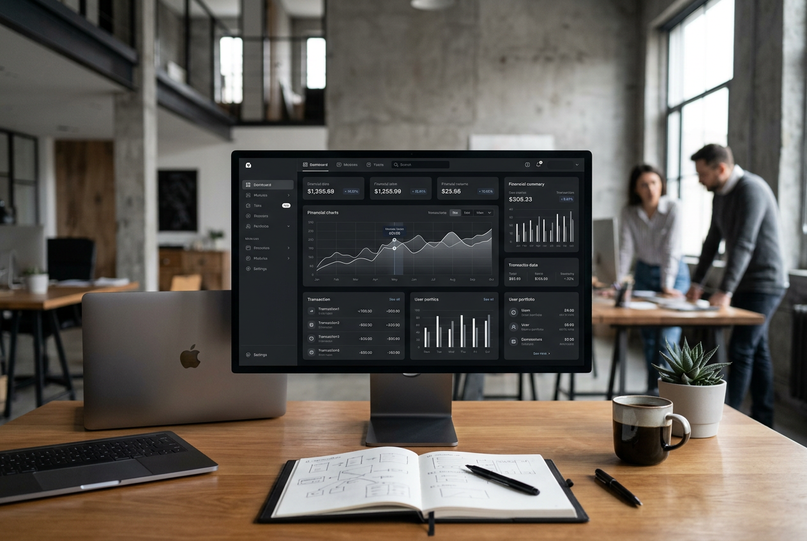
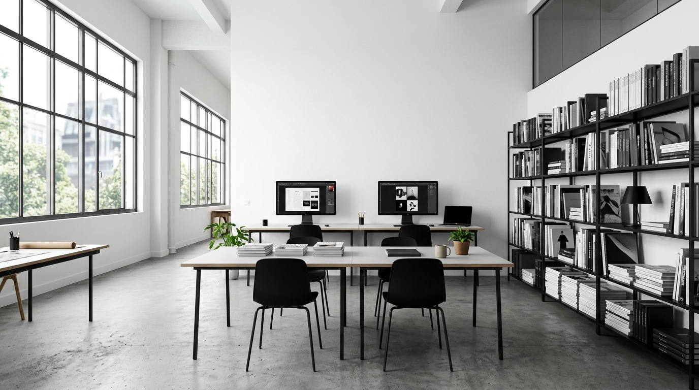
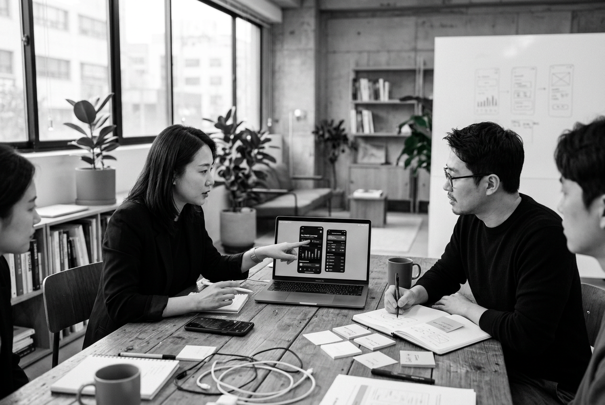
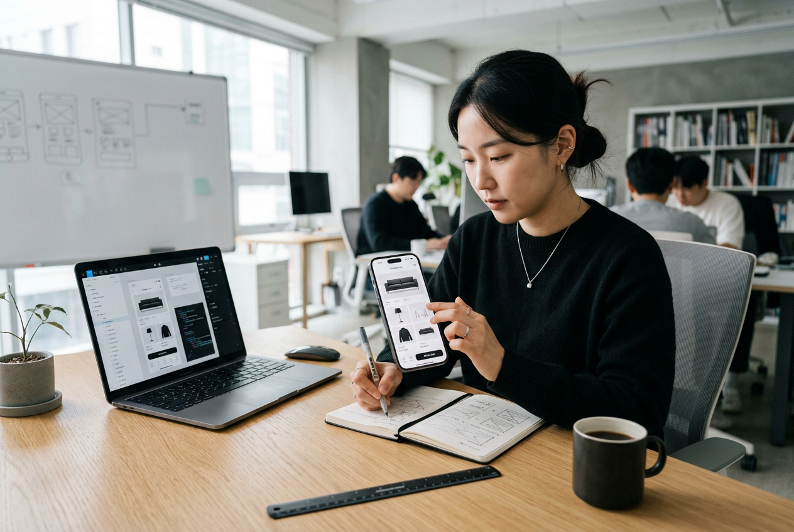
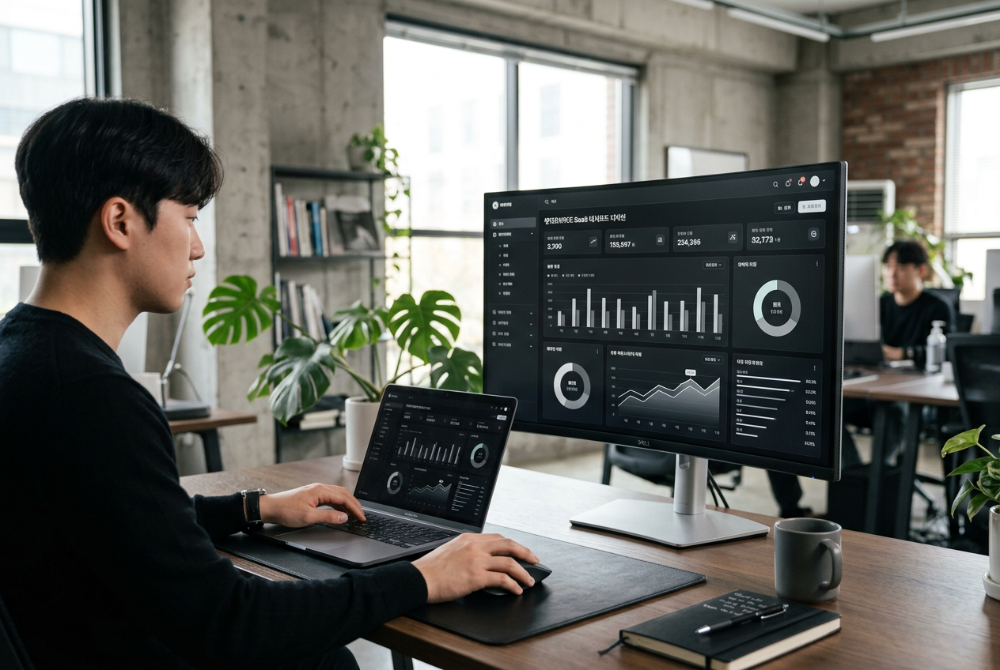
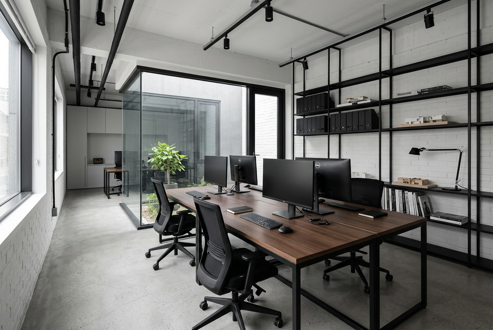
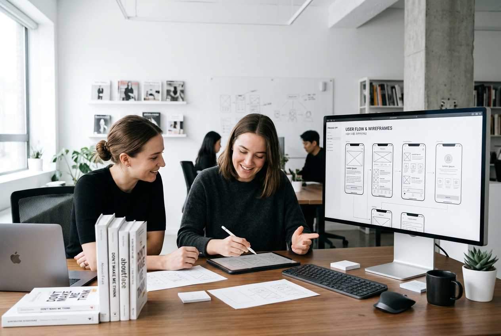
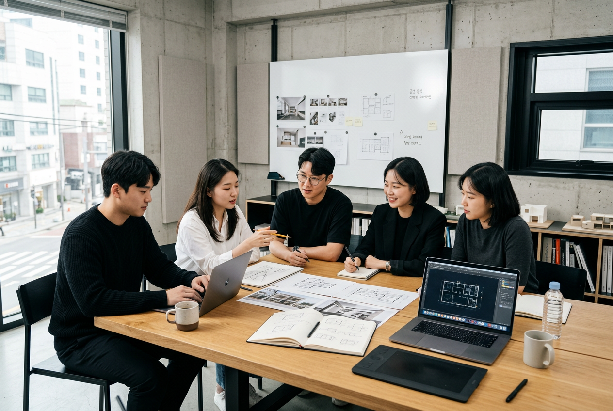
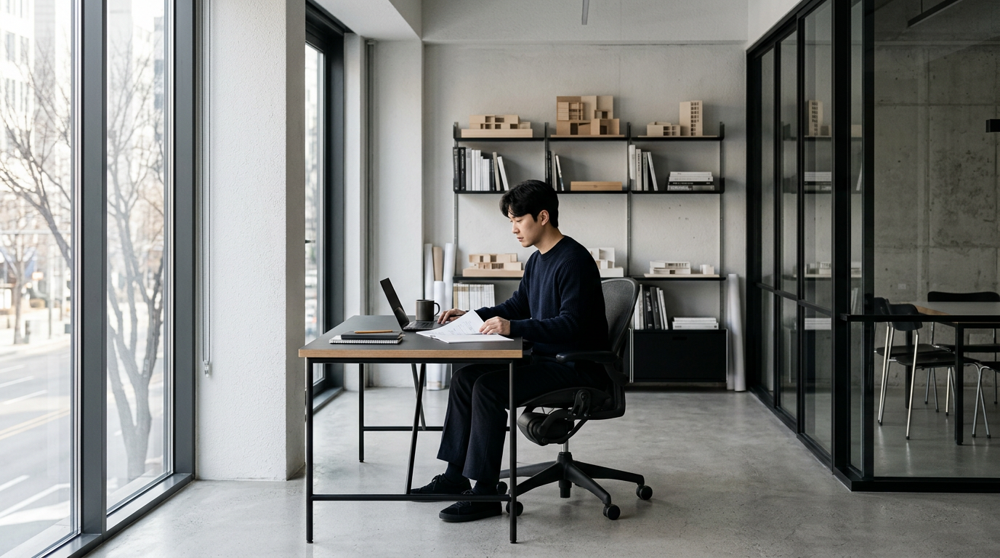
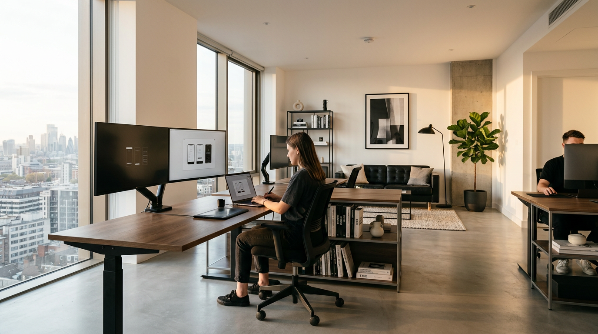

Fintech · 2025
페이브릿지 — 결제 대시보드 리디자인
복잡한 B2B 결제 흐름을 단순화하여 이탈률 42% 감소, 일일 활성 사용자 2.3배 증가를 달성했습니다.

Impact
디자인은 감각이 아니라 지표입니다.
우리가 함께한 프로젝트의 성과입니다.
0
% Conversion Uplift
평균 전환율 향상
0
Projects Delivered
완료 프로젝트
0
Design Systems Built
구축 디자인 시스템
0
% Client Retention
재계약률
Selected Work
각 프로젝트는 고유한 문제에서 출발합니다.
과정과 결과를 함께 읽어보세요.

Fintech · 2025
복잡한 B2B 결제 흐름을 단순화하여 이탈률 42% 감소, 일일 활성 사용자 2.3배 증가를 달성했습니다.

Healthcare · 2025
환자-의사 매칭 시간을 평균 8분에서 90초로 단축. 예약 완료율 78% 향상.

E-commerce · 2024
셀러 온보딩 프로세스를 12단계에서 4단계로 축소. 신규 셀러 등록 전환율 156% 증가.

Enterprise SaaS · 2024
150개 이상의 컴포넌트로 구성된 디자인 시스템 구축. 디자인-개발 핸드오프 시간 60% 절감.
"좋은 디자인은
— Dieter Rams
눈에 보이지 않습니다"
Services
리서치에서 런칭까지,
프로덕트의 모든 단계를 함께합니다.

사용자 인터뷰, 사용성 테스트, 데이터 분석을 통해 문제의 본질을 파악합니다.
일관된 사용자 경험을 위한 디자인 토큰, 컴포넌트, 가이드라인을 구축합니다.
비즈니스 목표와 사용자 니즈를 연결하는 프로덕트 전략과 인터페이스를 설계합니다.
2주 안에 문제 정의부터 프로토타입 검증까지. 빠른 의사결정을 돕습니다.
기존 프로덕트의 사용성 문제를 진단하고 개선 로드맵을 제공합니다.
Process
체계적인 프로세스가
예측 가능한 결과를 만듭니다.
01
비즈니스 목표, 사용자 니즈, 시장 환경을 깊이 이해합니다.
02
리서치 인사이트를 기반으로 문제를 명확하게 정의합니다.
03
와이어프레임부터 하이파이 목업까지, 구조를 시각화합니다.
04
인터랙티브 프로토타입으로 가설을 빠르게 검증합니다.
05
실제 사용자와 함께 테스트하고 데이터로 개선점을 찾습니다.
06
개발팀과 긴밀히 협업하여 완성도 높은 런칭을 지원합니다.

Team
삼성, 네이버, 카카오 출신 디자이너가
하나의 팀으로 움직입니다.

각자 다른 산업에서 경험을 쌓은 디자이너들이 모여, 다양한 관점으로 문제를 바라봅니다. 빠르게 결론에 도달하되, 근거 없는 결정은 하지 않습니다.
Design Director
ex-Samsung Design, Naver UX Lab. 15년차.
Lead UX Researcher
ex-Kakao UX Research. HCI 석사. 사용성 전문.
Senior Visual Designer
ex-Line Design. 디자인 시스템 및 모션 전문.

Industries
핀테크부터 헬스케어까지,
각 산업의 맥락 위에 설계합니다.
결제, 투자, 보험
원격 진료, EMR, 웰니스
마켓플레이스, D2C, 라이브
HR, CRM, 애널리틱스
Design Sprint
₩8,000,000
2주 집중 프로그램
Product Design
₩5,000,000
월 리테이너
Design System
₩15,000,000+
규모에 따라 별도 견적
Testimonials
모노스페이스 팀은 우리가 미처 발견하지 못한 사용자 문제를 찾아냈습니다. 디자인 스프린트를 통해 2주 만에 프로토타입을 만들었고, 실제 사용자 반응은 기대 이상이었습니다.
정경호
페이브릿지 CPO
디자인 시스템 덕분에 개발 속도가 눈에 띄게 빨라졌습니다. 디자이너와 개발자 사이의 소통 비용이 확 줄었어요.
서류진
데이터뷰 CTO
사용성 감사 결과를 받아보고 놀랐습니다. 데이터로 보여주니 경영진 설득이 한결 수월해졌어요.
민지현
메디플로우 Product Lead

Get in Touch
아이디어 단계부터 함께합니다.
편하게 연락주세요.